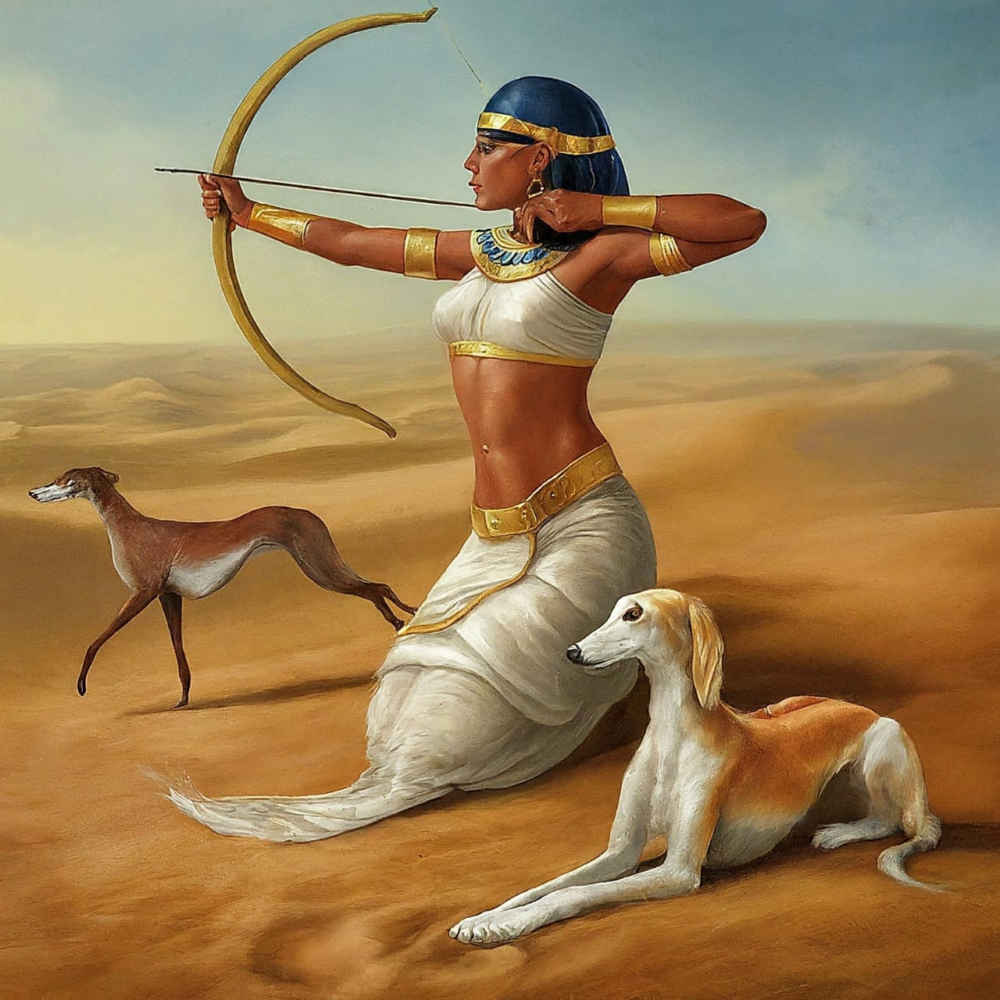

The Aginu Coin Mission
Dogs have been our loyal companions since the dawn of creation. We have happily
used them for hunting, guarding, sporting, hauling, and as our adorable pets.

Yet, some breeds like the Saluki, face extinction. Together, we can ensure these
ancient companions grace our lives for generations to come. Share your Saluki
Meme Coins with your friends to make the aware and curious about Saluki Dog.
The Plight of the Saluki
There are several factors contributing to the
decline of the Saluki population. Limited Gene Pool: Salukis have a
relatively small gene pool due to their historical role as hunting
companions for nomadic tribes. This limited genetic diversity makes
them more susceptible to diseases and reduces their adaptability in a
changing environment. Habitat Loss:
The Saluki's native habitat in the
Fertile Crescent region has been significantly impacted by human
activities like urbanization and agriculture. This loss of suitable
land shrinks their territory and hunting grounds. Shifting
Preferences: Modern hunting practices often favor breeds bred
specifically for firearm use, diminishing the role of traditional
sighthounds like the Saluki. The combined effects of these factors
have pushed the Saluki breed towards a precarious position.
 However, today, the Saluki Dogs faces a harshreality: the threat of extinction.
This is where Aginu Coin emerges as a beacon of hope. We are a meme coin like dogecoin or Shiba Inu but
Aginu Coin leverages the power of blockchain technology and artificial
intelligence (AI) to publicize Saluki plight and to research on its genetics.
Join us!
Link to Quickswap
However, today, the Saluki Dogs faces a harshreality: the threat of extinction.
This is where Aginu Coin emerges as a beacon of hope. We are a meme coin like dogecoin or Shiba Inu but
Aginu Coin leverages the power of blockchain technology and artificial
intelligence (AI) to publicize Saluki plight and to research on its genetics.
Join us!
Link to Quickswap